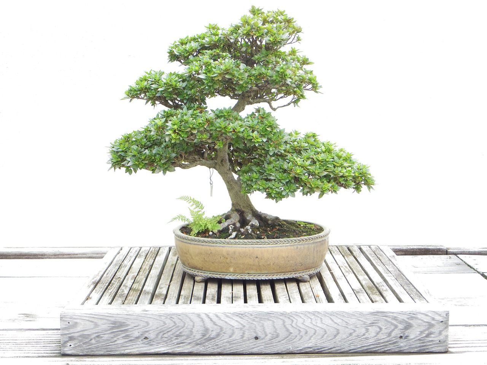

髙橋玄五郎と申します。
妻に勧められるがままにこのサイトを作りました。不手際もあ流と思いますが何卒よろしくお願いします。
盆栽集め
最近盆栽を集めることに凝っております。美しい輪郭を作るために剪定・針金かけ等の作業を行い、あるべき姿へと導いていく。
深く没頭させるこの一連の作業が僕の心を清く美しいものへと変化させます。皆さんも一緒にいかがでしょうか。
（画像はうちの庭で撮った盆栽です(⌒-⌒; )）

読書
若輩の頃からよく本を読んでいました。とはいえ、裕福な生まれでもなかったので図書館で借りて一人読むことが多かったです(^ ^)
最近はライトノベルというのですかね？娘が可愛らしい表紙の本を持ち帰って読んでいるのを見かけます。僕らの時代が過ぎ去るのを実感して少し悲しいですが、文字を追う人が今もいるというのは素直に喜ばしい話ですね。
焼肉
盆栽集め、読書と続いてなんと焼肉です❗️おじさんらしからぬ、と驚かれた方もいらっしゃるでしょうか？鍋奉行ならぬ焼肉奉行と言いましょうか。僕はこの焼肉奉行が大の得意なんです。
ここだ！を見極めて油をいい感じに乗らせたままジューシに焼けます。焼きおにぎり作るのは未だに得意ではない（網にお米をくっつかせてしまう😂）のでまた、良い方法を見つけたら皆さんにもお教えしますね。